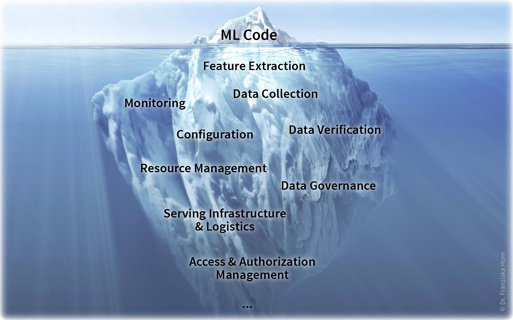
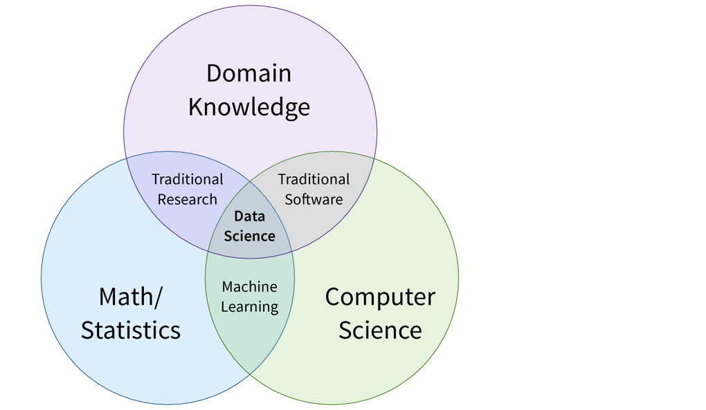
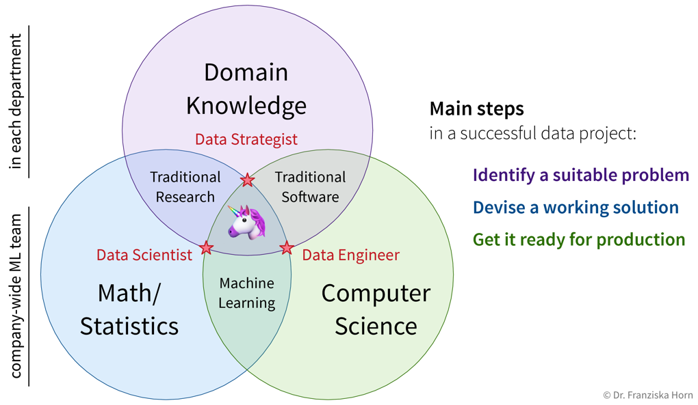
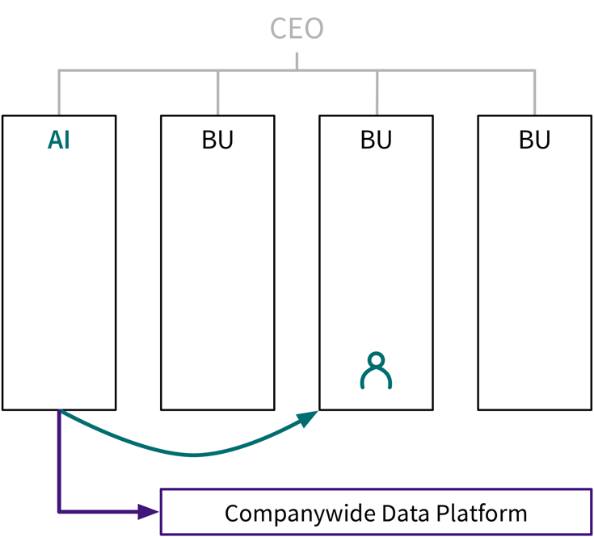
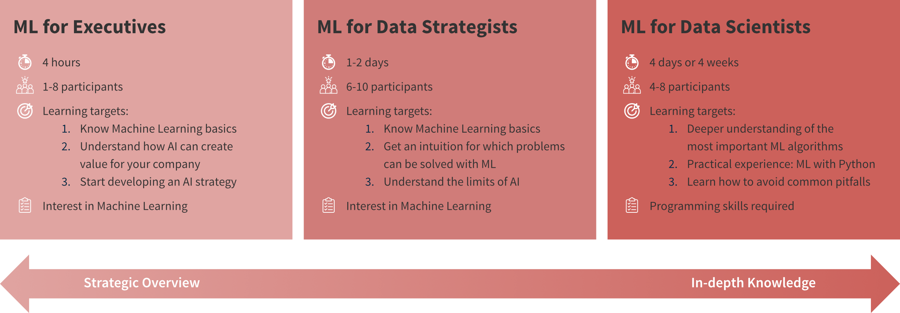
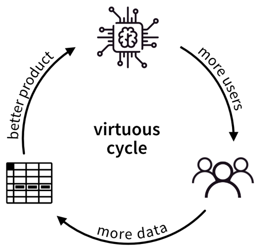

Fazit
Nachdem wir nun viel über die Theorie des maschinellen Lernens (ML) gesprochen haben, ist es Zeit für einen Realitätscheck.
Hype vs. Realität
In der Einleitung haben wir viele Beispiele gesehen, die zum ML-Hype beigetragen haben. Doch beim Einsatz von ML beispielsweise in der Fertigungs- oder Prozessindustrie sieht die Realität oft ganz anders aus und nicht jede Idee funktioniert wie erhofft:
| Hype: Big Data, Generative AI | Realität: |
|---|---|
| Datenbank mit Millionen von Beispielen | 150 manuelle Einträge in einer Excel-Tabelle |
| Homogene unstrukturierte Daten (z.B. Bilder, Audio, Text) | Messungen aus verschiedenen Quellen mit unterschiedlichen Skalen (z.B. Temperatur-, Durchfluss-, Drucksensoren) |
| Ausgefallene Deep-Learning-Architekturen | Neuronale Netze sind aufwändig zu trainieren und noch schwieriger zu erklären → Man muss Vorhersagen verstehen und ihnen vertrauen, wenn sie als Basis für Geschäftsentscheidungen dienen sollen. |
Aber es ist machbar! Ein gutes Beispiel kommt von dem Startup alcemy, das ML verwendet, um die Produktion von CO2-armen Zementen zu optimieren. Wie sie dabei mit den oben genannten Herausforderungen umgegangen sind, erklären sie in diesem Vortrag.
Machine Learning ist nur die Spitze des Eisbergs
Du wurdest ja bereits gewarnt, dass Data Scientists normalerweise nur etwa 10% ihrer Zeit mit den spannenden ML Methoden verbringen, während der Großteil ihrer Arbeit aus dem Sammeln und Bereinigen von Daten besteht. Dies trifft auf einzelne ML-Projekte zu. Möchte man jedoch KI produktiv für eine Vielzahl von Anwendungen einsetzen und ein datengesteuertes Unternehmen aufbauen, birgt dies weitere Herausforderungen, welche aber normalerweise nicht in der alleinigen Verantwortung einer Data Scientistin liegen:

Viele dieser Dinge, z.B. eine zentralisierte Dateninfrastruktur und ein klarer Data Governance Prozess, müssen jedoch nur einmal etabliert werden und alle zukünftigen ML-Projekte können davon profitieren.
Fachwissen ist der Schlüssel zum Erfolg!
Das Venn-Diagramm in der Einleitung zeigt ML an der Schnittstelle von Mathematik und Informatik. Doch vorherige Kapitel verdeutlichten, dass es notwendig ist, ML mit Fachwissen und Verständnis für die internen Geschäftsabläufe zu kombinieren. Diese Kombination führt zu vertrauenswürdigen Modellen, die durch aussagekräftige Informationen zu robusten Schlussfolgerungen gelangen. Diese Schnittmenge wird als Data Science bezeichnet:

Wie wir im nächsten Kapitel begründen werden, ist es jedoch unrealistisch, von einer einzigen Data Scientistin zu erwarten, dass sie in allen drei Bereichen eine Expertin ist. Um die Verantwortlichkeiten in einer Organisation sinnvoll aufzuteilen, empfehlen wir daher ein Aufgabensplitting in drei datenbezogene Bereiche.
Take Home Messages
- ML hat oder wird alle Bereiche unseres Lebens inkl. der Arbeit verändern.
- ML hat Limitierungen:
- Performance: Manche Probleme sind schwierig.
- Datenqualität und -quantität: Garbage in, Garbage out!
- Kausalität und Adversarial Attacks ⇒ Erklärbarkeit!!
- Kombiniere ML mit Fachwissen!
- Es ist ein iterativer Prozess…
- Erwarte nicht, dass ML sofort funktioniert!
- Kontinuierliches Monitoring und regelmäßiges Nachtrainieren der Modelle ist wichtig.
Wenn du jetzt neugierig geworden bist und mehr darüber erfahren möchtest, wie die verschiedenen ML-Algorithmen im Detail funktionieren, wirf einen Blick in die Vollversion dieses Buches!
KI Transformation eines Unternehmens
Der berühmte ML-Forscher Andrew Ng hat einen fünfstufigen Prozess vorgeschlagen, um ein Unternehmen in ein datengesteuertes Unternehmen zu verwandeln, welches in der Lage ist, KI produktiv zur Wertschöpfung einzusetzen.
Fünf Schritte für eine erfolgreiche KI-Transformation nach Andrew Ng
- Durchführung von Pilotprojekten, um in Schwung zu kommen
- Aufbau eines internen KI-Teams und der Dateninfrastruktur
- Angebot eines breiten KI-Trainings (für alle Mitarbeiter)
- Entwicklung einer KI- und Datenstrategie
- Ausbau der internen und externen Kommunikation
Empfohlene Materialien:
→ “AI for everyone” Coursera Kurs
→ AI Transformation Playbook
Co-Founder Google Brain
Vice President Baidu
Co-Founder Coursera
Professor @ Stanford University
[Schritt 1] Beginne mit kleinen Pilotprojekten, um das Potenzial und die Herausforderungen bei der Verwendung von ML zu verstehen
ML-Projekte sind anders als herkömmliche Softwareprojekte, bei denen man normalerweise zumindest weiß, dass eine Lösung existiert, und man muss nur einen effizienten Weg finden diese umzusetzen. Stattdessen ist ML abhängig von den verfügbaren Daten. Auch wenn es theoretisch möglich wäre, ein Problem mit ML zu lösen, könnte dies an der Datenqualität oder -quantität scheitern. Bevor man eine unternehmensübergreifende KI-Initiative umsetzt, ist es daher ratsam, mit mehreren kleineren Pilotprojekten zu starten, um ein besseres Gefühl dafür zu bekommen, was es bedeutet wenn man sich bei der Lösung seiner Probleme auf eine KI verlässt.
Bei der Auswahl eines Pilotprojekts ist der Return on Investment (ROI) des Projekts nicht der wichtigste Faktor, sondern hier stehen die bei der Umsetzung gesammelten Erfahrungen mit ML im Vordergrund. Es ist jedoch wichtig, ein Projekt zu wählen, das technisch machbar ist. Es sollten also bereits ML-Algorithmen für diese Problemstellung existieren, sodass keine jahrelange Forschung nötig ist, um eine eigene ausgefallene neuronale Netzwerkarchitektur zu entwickeln. Weiterhin sollte man über genügend hochwertige Daten verfügen, um zügig loszulegen zu können, damit man nicht Monate nur mit der Datenvorverarbeitung verbringt, weil z.B. Daten aus verschiedenen Quellen einer fragmentierten Dateninfrastruktur kombiniert werden müssen.
Fehlende KI-Resourcen kann man in diesem Schritt mit externen Berater:innen ausgleichen, die die ML-Expertise bereitstellen, während man selbst das Domänenwissen für den Erfolg des Pilotprojekts beisteuert.
[Schritt 2] Richte ein zentralisiertes KI-Team und eine Dateninfrastruktur ein, um größere Projekte effizient und effektiv durchzuführen
Wir haben bereits gesehen, dass wir in der Praxis an der Schnittstelle von Theorie, Programmierung und Fachwissen arbeiten, also Data Science brauchen. Es ist jedoch unwahrscheinlich, dass man eine einzelne Person findet, die in allen drei Bereichen wirklich kompetent ist. Stattdessen haben die Menschen immer einen gewissen Fokus, weshalb wir hier drei unterschiedliche Rollen vorschlagen, die auch sehr gut zu den drei Hauptschritten für die erfolgreiche Durchführung eines ML-Projekts passen:

Idealerweise sind Data Scientists und Engineers in einem eigenen separaten Team (dem “KI-Team”) und arbeiten an Projekten aus unterschiedlichen Abteilungen wie bei einer internen Beratung:

Dies hat mehrere Vorteile:
- Data Scientists können mit anderen ML-Expert:innen Lösungen diskutieren → viele Probleme aus unterschiedlichen Geschäftsbereichen benötigen ähnliche Algorithmen.
- Daten aus dem gesamten Unternehmen können für eine ganzheitliche Analyse kombiniert werden.
- Die Finanzierung ist unabhängig von einzelnen Geschäftsbereichen, z.B. erforderlich für die Vorabinvestitionen in eine Dateninfrastruktur und zusätzliche Weiterbildungsmaßnahmen um mit neuer ML-Forschung Schritt zu halten.
Wie wir in der Einleitung besprochen haben, werden in einem ML-Projekt etwa 90% der Zeit mit Data Wrangling und Preprocessing verbracht. Daher sollte das KI-Team besonders am Anfang mehr Data Engineers als Data Scientists haben, damit diese eine solide Dateninfrastruktur aufbauen können, die den Data Scientists später viel Zeit und Kopfschmerzen erspart.
[Schritt 3] Schule andere Mitarbeiter, um ML-Probleme zu erkennen und eine Daten-Kultur zu etablieren
Während Data Scientists die von ihnen verwendeten Algorithmen im Detail verstehen müssen, sollten andere Mitarbeiter (insbesondere Data Strategists und Abteilungsleiter:innen) ein grundlegendes Verständnis davon haben, wozu ML fähig ist und wozu nicht, damit sie mögliche ML-Probleme in ihrem Bereich identifizieren und an das KI-Team weitergeben können.

[Schritt 4] Entwickle eine schlüssige Strategie mit langfristigen Zielen, die zu einem Wettbewerbsvorteil führt
Die Entwicklung einer Strategie mag der erste Impuls einer Führungskraft sein, wenn sie mit einem neuen Thema wie KI konfrontiert wird. Da sich KI-Probleme jedoch so stark von anderen Projektarten unterscheiden, lohnt es sich wirklich, zuerst Erfahrung mit diesem Thema zu sammeln (also mit Schritt 1 zu beginnen!). Nachdem einige Pilotprojekte erfolgreich abgeschlossen und die Räder in Gang gesetzt sind, um ein KI-Team zu bilden sowie die anderen Mitarbeiter zu schulen, gibt es hier ein paar Dinge, die man beim Entwickeln einer unternehmensweiten KI-Strategie beachten sollte:
- Erstelle strategische Datenassets, die für eure Konkurrenz schwer zu replizieren sind:
- Langfristige Planung: Welche Daten könnten in Zukunft wertvoll sein? → Fange jetzt an, sie zu sammeln!
- Vorabinvestitionen: Welche Infrastruktur und Prozesse sind erforderlich, um die Daten den richtigen Personen zugänglich zu machen?
- Wie können Daten aus verschiedenen Abteilungen kombiniert werden, damit das KI-Team “die Punkte verbinden” kann und dadurch einen einzigartigen Wettbewerbsvorteil schaffen kann?
- Welche Möglichkeiten existieren in Bezug auf eine strategische Datenakquise, z.B. in Form von “kostenlosen” Produkten, bei denen Nutzer mit ihren Daten bezahlen (wie bei Google, Facebook, etc.)?
- Erstelle KI-gestützte Anwendungen, die ein Alleinstellungsmerkmal für eure Produkte sind:
- Versuche nicht, eine Standardlösung zu bauen, die man auch leicht von einem externen Anbieter einkaufen könnte. Kombiniere ML stattdessen mit eurem einzigartigen Fachwissen und Daten, um neue Funktionen für bestehenden Produkte zu entwickeln. Somit gewinnen sie für Kunden an Attraktivität und es können neue Marktbereiche erschlossen werden.
- Wie könnt ihr einen positiven Kreislauf etablieren, in dem eine KI mehr Nutzer anzieht, welche wiederum mehr Daten generieren, mit denen die KI verbessert werden kann, um so weitere Nutzer anzuziehen?

[Schritt 5] Kommuniziert euren Erfolg
Nach erfolgreicher Implementierung von KI im Unternehmen solltet ihr euren Erfolg natürlich auch kommunizieren. Dazu gehören neben internen und externen Pressemitteilungen zum Beispiel auch Stellenangebote. Zeigen diese eure KI Kompetenzen, statt eine Reihe von Buzzwords aufzulisten, ziehen sie automatisch qualifiziertere Kandidat:innen an.